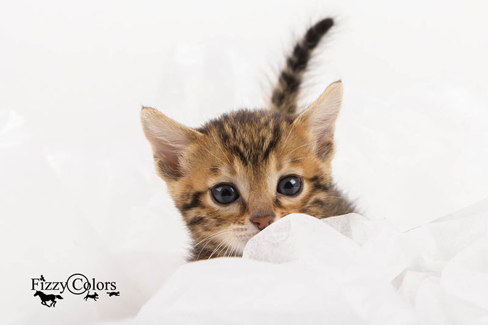
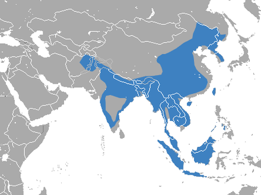

Bengalkatzen
Die Rasse

Die Bengal-Katze ist eine Rasse der Hauskatze, in der das äußerliche Erscheinungsbild einer Wildkatze mit dem liebevollen und anhänglichen Wesen der Hauskatze verbunden ist. Diese Rasse, die auch unter dem Namen Leopardette im deutschsprachigen Raum bekannt ist, entstand aus einer Kreuzung von Bengalkatze (Asiatische Leopardenkatze) mit einer kurzhaarigen Hauskatze.
Merkmale
Die Bengalkatze ist etwa so groß wie eine Hauskatze, aber schlanker und hat längere Beine. Ihr Kopf ist mit zwei markanten dunklen Streifen gezeichnet, relativ klein mit einer hellen, kurzen und schmalen Schnauze und runden Ohren, die rückseitig schwarz sind mit einem kleinen hellen Fleck in der Mitte. Auf Körper und Gliedmaßen hat sie schwarze Flecken unterschiedlicher Größen und Formen und zwei bis vier Reihen länglicher Flecken über dem Rücken. Der Schwanz ist gefleckt mit ein paar Ringen am Ende. Der Hintergrund ihres gefleckten Fells ist gelbbraun bis silbergrau gefärbt mit weißem Bauch. Die Färbung und Größe der Flecken als auch Körpergröße und Gewicht variieren in ihrem weiten Verbreitungsgebiet jedoch so stark, dass sie für unterschiedliche Arten gehalten wurden. In den Tropen lebende Bengalkatzen wiegen zwischen 550 g und 3,8 kg bei einer Kopf-Rumpf-Länge von 38,8–66 cm und einer Schwanzlänge von 17,2–31 cm. Die im Norden Chinas und Sibirien lebenden wiegen bis zu 7,1 kg bei einer Kopf-Rumpf-Länge bis 75 cm; vor dem Winter nehmen sie in der Regel an Gewicht zu, das sie bis zum Frühjahr wieder verlieren.
Die Bengalkatze zeichnet sich durch eine große innerartliche Variabilität aus. Dabei unterscheiden sich vor allem Bengalkatzen aus den nördlichen Teilen des Verbreitungsgebietes, etwa aus Ostsibirien erheblich von den Formen aus Gebieten in Äquatornähe. Im Süden ist die Grundfarbe gelblich-braun, ähnlich einem Leoparden, im Norden dagegen blass silbergrau. Die Flecken sind bei nördlichen Populationen große Rosetten, bei südlichen Bengalkatzen kleine Tupfen.
Verbreitung und Lebensraum
Bengalkatzen sind die am weitesten verbreiteten Kleinkatzen Asiens. Ihre Verbreitung reicht vom Amur-Gebiet im Fernen Osten Russlands über Korea, China, Indochina, nach Westen bis zum Norden Pakistans und nach Süden bis auf die Philippinen und die Sunda-Inseln Indonesiens. Sie sind in landwirtschaftlich genutzten Regionen anzutreffen, bevorzugen aber bewaldete Gebiete. Sie leben in tropischen immergrünen Regenwäldern und Plantagen auf Meereshöhe sowie in subtropischen feuchten Mischwäldern und Nadelwäldern der Vorberge des Himalaya in Höhen über 1000 m. Im Jahr 2009 wurde eine Bengalkatze in Nepals Makalu-Barun-Nationalpark auf einer Höhe von 3254 m mithilfe einer Kamerafalle fotografiert. In dem von Rhododendron, Eichen und Ahorn dominierten Gebiet der Untersuchung leben mindestens sechs Individuen. Im Nordosten ihres Verbreitungsgebiets leben sie in der Nähe von Flussläufen, Tälern und in Schluchtwäldern, meiden aber Gegenden, in denen mehr als 10 cm Schnee liegt. In trockenen baumlosen Gegenden Pakistans sind sie selten.
Herkunft / Ursprünglicher Lebensraum

Quelle: Wikipedia.org